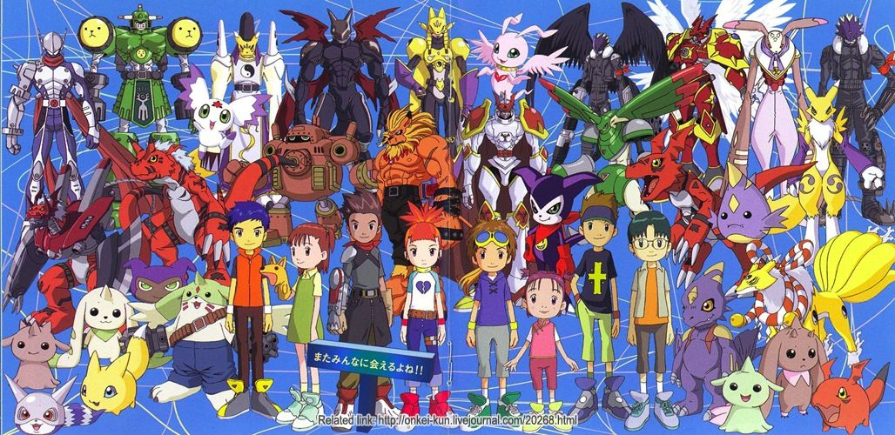

Gracias al éxito de esta primera serie animada fue que se llegó a popularizar más la franquicia, y esto generó la aparición de
toda la mercancía comercial de Digimon.
Digimon Adventure
La historia se centra en siete niños de Japón, que son transportados al Mundo digital después de encontrar unos Digivice y ser
arrastrados por una "gran ola", llegando así a la Isla File (lit. «Isla archivo»). Allí encuentran a sus compañeros Digimon,
y con su ayuda, aprenderán a sobrevivir pese a las adversidades de estar en un mundo desconocido. Conforme avanza la serie,
descubren que son los Niños elegidos. A mitad de la serie se integra el octavo niño elegido con su Digimon. Los 8 niños tendrán
que luchar contra las fuerzas de la oscuridad que quieren apoderarse del mundo digital y el mundo real.
Digimon 02
Es la continuación de Digimon Adventure y su historia transcurre tres años después. Como el antiguo grupo de niños elegidos
tienen nuevas responsabilidades, ya que son adolescentes, un nuevo grupo es escogido, al cual se unen dos de los miembros
originales, Takeru Takaishi y Hikari Yagami. La temporada sucesora es Digimon Tamers.
Digimon Tamers

Digimon Tamers toma lugar en una continuidad diferente a la de su predecesora, un mundo parecido al nuestro donde los Digimon
son una franquicia de juguetes y una serie de TV... o eso es lo que las personas normales suponen. Un grupo de niños de 10 años
(Matsuda Takato, Li Jianliang y Makino Ruki) se alía con sus propios Digimon para poder detener a los Digimon salvajes que
intentan invadir el Mundo Humano y a una sombría organización del gobierno, que también va contra los salvajes, aunque con
propósitos diferentes.
Digimon Frontier
La historia de esta entrega animada comienza cuando, un día del año 2002, muchos niños de Tokio y alrededores reciben un
mensaje en sus móviles que les cita a las 6 p.m. en el intercambiador de Shibuya. Entre ellos se encuentra Takuya Kanbara,
que recibe el mensaje y decide por impulso acudir a la llamada. Durante el viaje en tren se topa con Koji Minamoto y cuando
llegan a Shibuya se montan en un ascensor que les transporta a una estación inexistente en el subsuelo de Shibuya. Allí suben
a unos extraños trenes (para más tarde descubrir que se trata de Trailmons, unos trenes especiales que circulan por todo el
Mundo Digital) y en uno de ellos Takuya conoce a JP, Zoe y Tommy (este último estaba en el tren en contra de su voluntad),
con los que forma un primer grupo. Al llegar al Digimundo llegan a la Estación de la Llama, en la Aldea del Fuego y se
encuentran con un par de digimons llamados Bokomon y Neemon, quienes les guiarán por el digimundo para derrotar a Kerpymon.
Recibirán la ayuda de los Guerreros Legendarios, quienes intentan salvar el digimundo. Al llegar, sus móviles se transforman
en digivices (D-Tectors) que tienen la cualidad de albergar los Espíritus Digitales, capaces de transformar a los niños en
Digimons. Esos espíritus digitales otorgan al usuario la capacidad de transformarse en uno de los diez guerreros legendarios,
que antaño salvaron al Digimundo de una gran catástrofe provocada por Lucemon, un ángel que terminó con la guerra entre
digimons pero fue corrompido por el poder; vencido por los 10 Guerreros Legendarios; y encerrado en lo más profundo del
Digimundo (el Área Oscura).
Digimon Data Squad
La temporada se emite después de tres años desde "Digimon Frontier". Es una de las temporadas más cortas que ha tenido Digimon.
Destaca el cambio en el diseño de los personajes humanos, uno de los más destacados es la del protagonista principal, Masaru,
que a diferencia de los otros protagonistas de las demás temporadas no lleva las características gafas, y no es un niño, sino un
adolescente. El Digivice usado en esta temporada es llamado Digivice IC, aunque luego haya una actualización de este llamado
Digivice Burst. Esta temporada se estrenó en Latinoamérica en febrero del 2010. También se emitió en España por los canales
Disney XD y Boing.
Digimon Xros Wars
Un joven llamado Mikey es transportado al mundo digital junto con sus dos amigos. Los niños conocen a Shoutmon y sus formidables
pero estrafalarios compañeros Digimon. Shoutmon anhela ser el benevolente “Rey de los Digimon” y les pide ayuda para alcanzar
su meta. Mikey accede a ayudar, iniciando una aventura épica y participar en duelos extraordinarios como nada visto antes.
Ahora, el destino del mundo digital está en las manos del joven líder y sus amigos.
Reboot de Digimon Adventure
Digimon Adventure: (デジモンアドベンチャー: Dejimon Adobenchā:?) es la octava serie de anime de la franquicia Digimon y se
considera un reinicio de la primera temporada televisiva, Digimon Adventure, que se lanzó en 1999.
La serie se estrenó el 5 de abril de 2020 en Fuji TV, y se emitió hasta el 26 de septiembre de 2021.